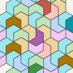

A working paper by David Ryan. Draft 1, 2026‑09‑29.
This computer-assisted result has not been peer-reviewed. It awaits an independent implementation and compact rejection certificates.
We ask whether a connected union of congruent Hat-family tiles or Spectres can tile the plane monohedrally, with reflected cluster copies allowed. A parameter-transfer argument and exact finite calculations exclude every topological-disc cluster of two through five tiles in either family. No such cluster admits two complete coronas.
drbuild.uk/papers/monotile-clusters.pdf always holds the newest draft.
| Draft | Date | Changes |
|---|---|---|
| Draft 1 | 2026‑09‑29 | First version |